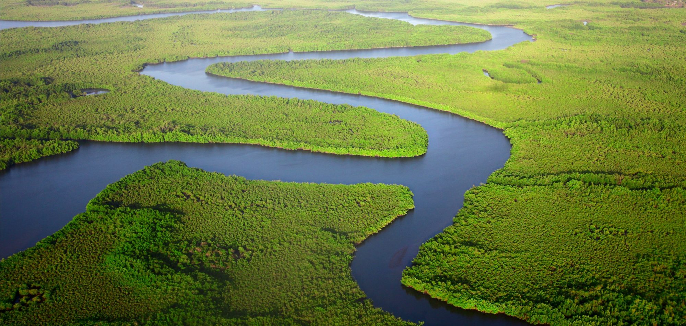

About
Nearly 20 years in water, sanitation and climate programmes
- Based in
- Berlin, Germany
- Languages
- English, French, German
- Education
- MBA, University of Bradford, 2027 (expected)
- MSc in Analytics, Georgia Institute of Technology, 2022
- M.A. in Sociology, University of Bielefeld, 2005
- Certificates
- Geo-visualisation, University of Amsterdam, 2023
- Fundamentals of GIS, University of California, Davis/Coursera, 2022
- Certified Expert in NDC Financing, Frankfurt School, 2022
- Certified Expert in Climate Adaptation Finance, Frankfurt School, 2021
- Financing and Investing in Infrastructure, Università Bocconi/Coursera, 2017
- Graduate Diploma in Environmental Management, University of Hagen, Germany, 2017
- Publications
- UNICEF (2021): The impact of climate, energy, and environment on children and their families in Burundi. (Led the concept, drafting and coordination as Chief of Climate and WASH.)
- Spalthoff, D., Koslengar, M., Donin, G., Rai, D., Bonkoungou, S. (2020): Lessons Learned from Action Research on Rural Water Service Delivery Models through a Public-Private Partnership in Burkina Faso. UNICEF.
- Spalthoff, D., Eguavoen, I. (2010): The Right Way to Ensure Access? Human Rights, Local Water Rights, and Right-based Discourses Against Water Privatization in Ghana. In Mollinga, P., Bhat, A., Saravanan, V.S. (eds.): When Policy Meets Reality: Political Dynamics and Water Resources Management Reform. ZEF Development Studies, 2010.
- Spalthoff, D., Van Rooijen, D., Raschid-Sally, L. (2008): Domestic Water Supply in Accra. In: Proceedings of the 33rd Water, Engineering and Development Centre (WEDC) International Conference on Access to Sanitation and Safe Water: Global Partnerships and Local Actions. Accra, Ghana, 2008.
I spent 15 years with UNICEF in senior country and regional roles across Africa. I led national water, sanitation and hygiene (WASH) programmes in Côte d'Ivoire, Burkina Faso and Burundi, and as Regional WASH Specialist for West and Central Africa (2023 to 2025) I provided technical assistance to 24 UNICEF country offices on sector systems, climate resilience and financing.
Selected work
Community-led sanitation at national scale (Burkina Faso, 2015 to 2019)
Community-led total sanitation is an approach in which communities end open defecation themselves, without subsidised latrines. I led UNICEF's work to introduce it in Burkina Faso: I set up a pilot and documented its results, and organised a visit by Kamal Kar, who developed the approach, including a meeting with two ministers. The government decided to scale up the approach.
Blue Soap: affordable soap during the COVID-19 pandemic (Burundi, 2020)
Handwashing was needed at national scale, and soap was unaffordable for many families. I designed and led Blue Soap, a public-private partnership with Burundi's main soap manufacturer, subsidised by UNICEF, the World Bank and other partners. Through it, 10 million bars of soap a month were sold to consumers at half the market price.
Water and sanitation in Burundi's national climate plan (2021)
I led The impact of climate, energy, and environment on children and their families in Burundi, a UNICEF situation analysis of the consequences of climate change for children. In 2021, water, sanitation and hygiene were written into Burundi's Nationally Determined Contribution (NDC), its national climate plan.
Tracking how water and sanitation are financed (2023 to 2025)
I was UNICEF's regional focal point for the collaboration with the World Health Organization on WASH Accounts, which track how water and sanitation services are financed, and supported their preparation in five countries.
Climate finance for WASH in West and Central Africa (2023 to 2025)
I coordinated a multi-country Green Climate Fund concept note on water security in the Sahel with the African Development Bank and five governments, approved by the National Designated Authorities of all five countries. I also provided technical support on the climate rationale, alignment with the National Adaptation Plan, and vulnerability data for the Central African Republic's climate-resilient WASH funding proposal, approved by the Green Climate Fund Board in July 2026 as a US$69.1 million grant.
A systematic method for climate rationales (West and Central Africa, 2025)
Support to country offices on climate rationales had been ad hoc. I set up and oversaw a regional programme through which the Stockholm International Water Institute and the IVL Swedish Environmental Research Institute applied a step-by-step climate rationale method in 16 countries. Nine rationales had been completed when I left the role.
Corporate water replenishment claims (MBA research, 2026 to 2027)
Companies increasingly claim to replenish the water they use. My MBA research at the University of Bradford assesses these claims against integrity criteria adapted from carbon offsetting.
Multi-expert teams
For larger assignments, I assemble and lead teams of experts, bringing in specialists in, for example, environmental and social safeguards or gender. I led such teams for the Sahel concept note and for other multi-sector proposals.
Other work
In Burundi, I represented UNICEF as lead development partner in the national WASH sector group for three years. Earlier, I worked on the human rights to water and sanitation at the Office of the United Nations High Commissioner for Human Rights in Geneva, on water-sector reform in Burundi with the Deutsche Gesellschaft für Internationale Zusammenarbeit (GIZ), and on water policy and urban water supply in Accra, Ghana, as a junior researcher at the Center for Development Research (ZEF) of the University of Bonn.
Let's discuss how I can help you.
Describe the problem you need to solve and your timeline.
Get in touch